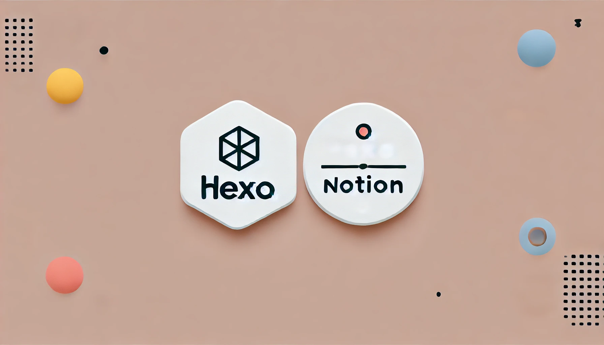
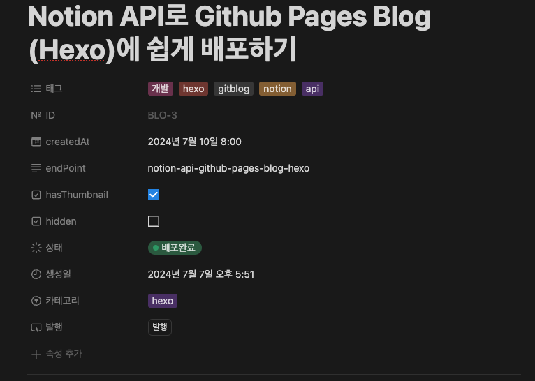
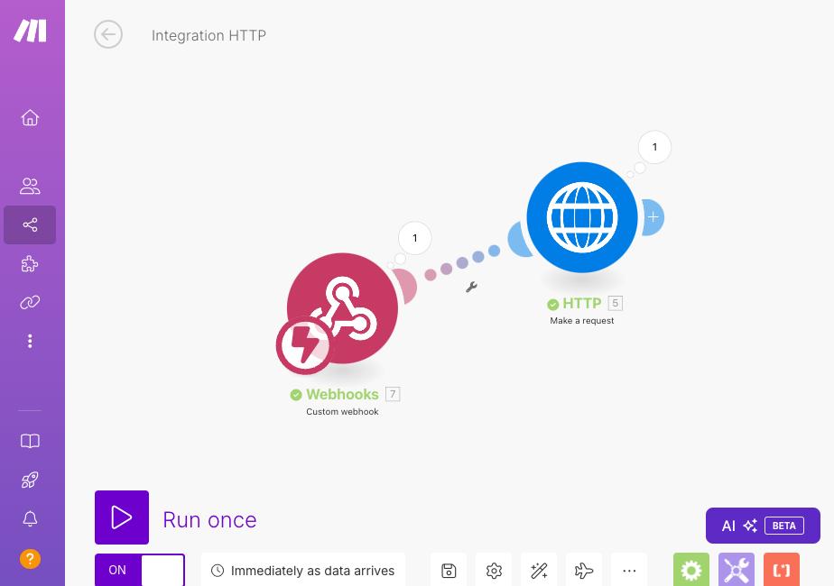

*파트너스 활동을 통해 일정액의 수수료를 제공받을 수 있음
Notion API로 Github Pages Blog (Hexo) 에 쉽게 배포해본 경험을 나누어보려고 합니다.
저는 Hexo로 구성된 블로그를 사용중이기 때문에 Hexo 기준으로 작성되었음을 알려드립니다.
Hexo 와 Notion API를 활용한 쉽고 빠른 배포 (GPT로 뽑은 썸네일..ㅋ)
무엇이 문제였는가?
Github Pages를 사용하다보면 개발자가 커스텀하면서 나만의 웹을 구성하고 만든다는 장점이 있었습니다.
하지만 글을 작성하는게 쉬운 에디터로 쓰지 못하고 Markdown문법을 사용하지만 실시간으로 이미지나, 여러 링크를 작성하기에 편리하지는 않았습니다. 그래서 글을 쓰는데 저해요소가 되었고 작성이 꺼려지는 문제까지 발생을 하였습니다.
GIthub Pages의 불편함을 해소하는 방법을 찾다.
이미 대중적으로 많이 쓰는 에디터는 Notion 이 있었고, 회사에서는 컨플루언스를 사용하고 있었습니다. 이 에디터의 공통점은 Markdown을 지원하고 이미 너무 익숙하고 편하게 글을 쓸 수 있다는 점이 있었습니다.
그리고 Notion의 API가 제공이 되기때문에 Notion의 작성된 Post를 가져와서 그대로 포스팅을 만들고 배포하면 되겠다는 생각을 해보았습니다.
Notion Post 배포 구성 방안
- Notion의 Blog 전용 Database를 만든다.
- Tag, Categories, status, createdAt, hasThumbnail과 같은 필요한 컬럼을 추가한다.
- status로 배포를 관리하기 때문에 (
시작 전, 작성중, 배포필요, 배포완료) 의 상태를 구분해놓는다.
- blog의 소스코드를 관리하는 repository에서 github action을 통해 CI/CD 작업을 진행한다.
- Noion API를 통해 Markdown을 만들어내는 js 코드를 작성한다.
- github action workflow를 만든다.
- Notion API를 통해 Blog Database를 읽어서 배표필요의 status의 값을 가져온다.
- 컬럼값을을 읽어서 원하는 작업을 진행한다. (저는 tag, catagories, hasThumbnail 의 값으로 원하는 작업들을 핸들링 하였음)
- Github Pages에 배포한다. (이미 포스트가 있다면 대치한다.)
- 배포가 된 Post는 상태값을
배포완료로 변경한다.
- git commit을 한다.
- 이 모든것을 자동화 한다.
make.com을 활용한 자동화
자 그러면 이 모든 방안을 또 수동으로 할 것인가? 👆No~ 아니다!! 나는 여기서 한번 더 자동화를 할 것이다.
이 자동화 Workflow를 Make.com 으로 연동할 수 있다.
아래의 이미지를 보면 발행 버튼을 만들었다. 이 발행버튼의 workflow는 다음과 같다.
- 배포버튼 클릭 → webhook 작동 → github API 요청 → 배포 gitgub action workflow실행
Notion의 상단 컬럼은 다음과 같이 만들어서 제어한다.
Notion 상단 컬럼 속성들
make.com을 이용한 workflow 자동화
자세한 배포 가이드는 다음 포스팅에서 자세하게 작성해볼 예정이다.
Notion BlockType 속성 테스트
표
| 헤더1 | 헤더2 | 해더3 |
|---|---|---|
| 1-1 | 2-1 | 3-1 |
| 1-2 | 2-2 | 3-2 |
코드블럭
1 | const hello = 'hello world' |
콜아웃 테스트
💡 노션의 콜아웃 블록 테스트
체크박스 테스트
todo list
- 아침 3:10 기상
- 물마시기
- 코드리뷰 하기
이미지 및 캡션 테스트
개인적으로 아주 좋아하는 미드 (실리콘밸리)
미드 실리콘밸리
넘버링 또는 ‘-’ 테스트
모든 열거방식은 편의상 ‘-’ 로 대체하였음
- 1번
- 1-1
- 1-1-1
- 1-1-2
- 1-2
- 1-2-1
- 1-2-2
- 1-1
- 2번
- 3번
인용구 테스트
인용구 테스트 입니다.
토글 테스트
토글 테스트
토글은 가능한지 모르겠습니다(?)
구분선 테스트
구분선 아래입니다.